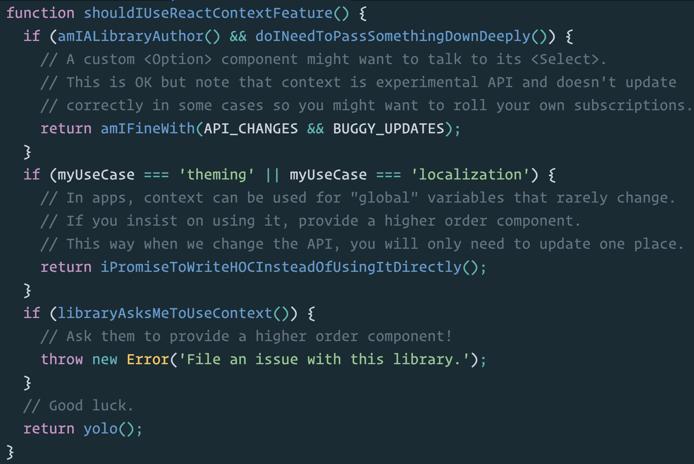

Safe Use of Context
Ivan Kovic, SeekandHit
-
IT Sistemi
-
ExtensionEngine
- BoardOnTrack - jQuery, Grails, MySQL
- MIT CRE - React, Django, Mongo, Postgre
-
SeekandHit
- Kiwi.com - React, Node.js, Postgre
- Internal tools - React
What is Context? Where Can I Use It?
-
Data Flow in React
- Local state in components
- Props passed from parent to children
-
Context
- All components can access it
- Avoid unwanted renders
- Child to (grand)parent communication
Why Not to Use Context
-
Experimental API
- Likely to break in future releases
-
Fundamentally broken API
- Naming collisions
- Lack of control over rendering
How to Use It Then?
-
API changes
- Reduce the area of use
- Allow only a minimal number of components to use context in a structured way
-
Lack of control over updates
-
Never change context value
-
Use it as a dependency injection system
Buzzwords to the Rescue!
-
Provider
- Must be a
Singleton
- Adds observers to context in a structured way
-
Observer
-
Notifies when a change in state occurs
-
Higher Order Component (HOC)
-
Subscribes to context changes
- When notified, passes new props to the decorated Component
Case Study: Rendering Based on Screen Size
- Use different components for different screen sizes
- Naive solution
- Add a new
resize
event listener on
componentDidMount
in each component
- Listener code duplicated in all components
- Better solution
- Put the listener logic in a HOC
- Still one event listener per component, but no code duplication
- Best solution
- Use Provider to register a single event listener, notify the components via HOCs
- Only one attached event listener
Conclusion

Dan Abramov on using context @twitter